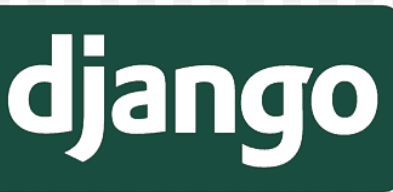

Django (/ˈdʒæŋɡoʊ/ JANG-goh; sometimes stylized as django)[6] is a free and open-source, Python-based web framework that runs on a web server. It follows the model–template–views (MTV) architectural pattern.[7][8] It is maintained by the Django Software Foundation (DSF), an independent organization established in the US as a 501(c)(3) non-profit.
